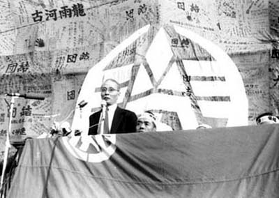

|
昭和35年11月1日、三川鉱ホッパー前におけるスト解除就労総決起大会で挨拶をする労農派マルクス
経済学者向坂逸郎（さきさか いつろう）。昭和60年没。
九州大学教授であり、三池労組組合員を学習指導した。「・・・労働者たちは、ただちに1200名の僚友が首になり、そのあとで
11万の僚友、さらに数十万、数百万の僚友が生活を奪われることを防ぐためにピケをはったのである。君の言うような理屈は資本
主義のなかではとおらん、という人があるだろう。私もそう思う。だから私は社会主義者なのである。だから、労働者も、いやで
もだんだん社会主義者にならざるをえない。彼等にとっても、生活を勝手に奪われることはかなわんことであるからである。つま
り、彼等に社会主義を教えているのは”向坂理論”でもなんでもなく、三井資本であり、中労委であり、国家である」と述べた。
三池労組の中でも、向坂逸郎に対する評価はまちまちで、「向坂先生が強い三池労組を作り上げた」という組合員がいた一方で、
「向坂が三池闘争に政治を持ち込んでややこしくした。我々働く者は単純に首切り反対を願っていただけだ。」という組合員がい
たのも事実である。

（写真提供：織田さん）
|